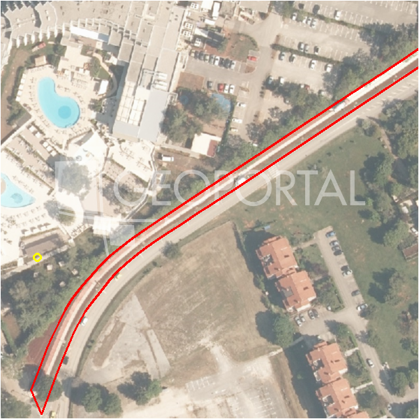

#45768 · ISTRA - POREČ, GRAĐEVINSKA PARCELA S POGLEDOM NA MORE, 1661m2
Poreč, Poreč, Istarska · zemljiste · njuskalo · status active · oglas ↗
Ocjena
- Score
- 60 rule 60 · LLM – · 12.09.2026.
- RLV
- 380.000 € (229 €/m²) · ratio 1,36
- Ukupna investicija
- 3,57 M€
- GBP
- 1.329 m²
- Feedback
- –
- CRM
- –
Oglas
- Cijena
- 280.000 € (169 €/m²)
- Površina
- 1.661 m² · DKP 2.044 m² (odstupanje 23,1 %)
- Prodavatelj
- agencija · Rina Nekretnine d.o.o.
- Prvi put
- 11.09.2026. · zadnje 11.09.2026. · 0 d na tržištu
Povijest cijene
| Datum | Cijena |
|---|---|
| 11.09.2026. | 280.000 € |
Flagovi
area_mismatch DKP površina odstupa > 15 % (−5)zone_uncertainty zona nije pregledana (reviewed: false) (−5)
llm_pending LLM ekstrakcija/ocjena nedostupna
Komponente score-a
| rlv | {'gbp': 1328.8000000000002, 'kis': 0.8, 'nkp': 996.6000000000001, 'noi': None, 'rlv': 379791.26086956577, 'ratio': 1.3563973602484491, 'value': None, 'phases': 1, 'profile': 'obala_visestambeno', 'gdv_neto': 4385040.000000001, 'cost_soft': 132880.00000000003, 'gdv_bruto': 5481300.000000001, 'kis_known': False, 'total_inv': 3565648.0000000005, 'cost_build': 2657600.0000000005, 'cost_other': 478368.0000000001, 'cost_sales': 164439.00000000003, 'demolition': False, 'gbp_source': 'kis', 'rlv_per_m2': 228.6521739130438, 'parcel_area': 1661.0, 'parcelation': False, 'roi_on_cost': 0.18368414380780165, 'profit_at_ask': 654953.0000000005, 'cost_demolition': 0.0, 'total_inv_phase': 3565648.0000000005, 'parcel_area_effective': 1661.0, 'sale_price_per_m2_nkp': 5500.0} |
| hard | [] |
| info | ['llm_pending'] |
| rubric | {'permits': {'max': 5.0, 'detail': {'permit': 'none'}, 'points': 0.0}, 'location': {'max': 15.0, 'detail': {'source': 'rlv.yaml:istra_zapad/row2', 'sale_price_per_m2_nkp': 5500.0}, 'points': 11.5}, 'physical': {'max': 4.0, 'detail': {'slope_pct': 9.02, 'road_access': 'yes', 'slope_points': 2.0}, 'points': 4.0}, 'liquidity': {'max': 3.0, 'detail': {'n_cuts': 0, 'points_cut': 0.0, 'points_days': 0.008333333333333333, 'seller_type': 'agencija', 'points_fresh': 0.5, 'price_cut_pct': None, 'days_on_market': 1, 'points_private': 0}, 'points': 0.51}, 'rlv_ratio': {'max': 25.0, 'detail': {'rlv': 379791, 'ratio': 1.356, 'asking_price': 280000.0}, 'points': 22.13}, 'ticket_fit': {'max': 10.0, 'detail': {'asking_price': 280000.0}, 'points': 7.47}, 'zone_quality': {'max': 8.0, 'detail': {'reason': 'zona nepoznata', 'source': 'nepoznato', 'zone_class': None}, 'points': 2.0}, 'profit_potential': {'max': 20.0, 'detail': {'roi_on_cost': 0.184, 'profit_at_ask': 654953}, 'points': 17.24}, 'price_vs_benchmark': {'max': 10.0, 'detail': {'source': 'auto:Poreč', 'deviation': 0.031, 'ask_eur_m2': 169, 'benchmark_eur_m2': 173.89}, 'points': 5.46}} |
| weights | {'llm': 0.4, 'rule': 0.6, 'model': 0.0} |
| penalties | {'area_mismatch': 5, 'zone_uncertainty': 5} |
| raw_score | 70,3 |
| rlv_notes | ['DKP površina odstupa 23 % → koristi se oglašena'] |
| flag_notes | {'max_gbp': 1329, 'total_inv': 3565648, 'zone_code': None, 'zone_class': None, 'zone_source': 'nepoznato', 'zone_reviewed': None, 'area_mismatch_pct': 23.08} |
| caps_applied | [] |
GIS
- Čestica
- k.o. 323748, k.č. 3713/2 (pin_buffer, 0,69); k.o. 323748, k.č. 3829/10 (pin_buffer, 0,55); k.o. 323748, k.č. 3713/1 (pin_buffer, 0,40)
- Zona
- – (–)
- kig / kis / katnost
- – / – / –
- GP / UPU
- – · UPU –
- Pristup / nagib
- yes · 9,0 % (max 11,8 %)
- More
- 104 m · red 2 · ZOP 1000
- Zaštite
- Natura ne · zaštićeno ne · kulturno dobro ne
- Zgrade na čestici
- 0 %
- Match
- 0,69
Karta
Ortofoto (DOF)

RLV kalkulacija — pretpostavke
| gbp | {'value': 1328.8000000000002, 'source': 'kis'} |
| kis | {'value': 0.8, 'source': 'default_profila'} |
| sea_row | {'value': '2', 'source': 'gis'} |
| soft_pct | {'value': 0.05, 'source': 'profil'} |
| nkp_ratio | {'value': 0.75, 'source': 'profil'} |
| cost_other | {'value': 478368.0000000001, 'source': 'profil: doprinosi+uređenje po m² GBP, financiranje+rezerva % gradnje'} |
| parcel_area | {'value': 1661.0, 'source': 'oglas'} |
| asking_price | {'value': 280000.0, 'source': 'oglas'} |
| margin_on_cost | {'value': 0.15, 'source': 'profil'} |
| build_cost_per_m2_gbp | {'value': 2000.0, 'source': 'profil'} |
| sale_price_per_m2_nkp | {'value': 5500.0, 'source': 'rlv.yaml:istra_zapad/row2'} |
| transfer_tax_and_acquisition | {'value': 0.06, 'source': 'profil'} |
Ekstrakcija iz oglasa
| utilities | ['struja', 'voda'] |
Benchmarks mikrolokacije
| Vrsta | Vrijednost | n | Od | Izvor |
|---|---|---|---|---|
| land_ask_eur_m2 | 174 | 302 | 11.09.2026. | auto |
| newbuild_sale_eur_m2_nkp | 3.695 | 8 | 11.09.2026. | auto |
Opis oglasa
Građevinsko zemljište s pogledom na more – Poreč, Sveti Lovreč | 1661 m² U blizini šarmantnog srednjovjekovnog gradića Sveti Lovreč, svega 15-ak minuta vožnje od Poreča i mora, nalazi se ova atraktivna građevinska parcela površine 1661 m². Parcela se smjestila na mirnoj lokaciji s otvorenim pogledom na more, potpuno je očišćena i spremna za gradnju. S obzirom na veličinu i oblik, idealna je za izgradnju jedne ili dvije luksuzne vile – savršena prilika za investiciju ili privatnu oazu u Istri. Infrastruktura (voda i struja) nalazi se u neposrednoj blizini. Zašto Sveti Lovreč? Ovaj autentični istarski gradić poznat je po bogatoj kulturno-povijesnoj baštini, netaknutoj prirodi, vrhunskoj gastronomiji i vinskim cestama. U blizini se nalaze brojne biciklističke i pješačke staze, što ovu lokaciju čini iznimno atraktivnom za ljubitelje prirode i aktivnog odmora. Cijena: 280.000 € Ne propustite ovu priliku – kontaktirajte nas za dodatne informacije ili dogovorite razgledavanje već danas. +385 91 2848 310, Višnja ID KOD AGENCIJE: 1992 Višnja Broqi Agent s licencom Mob: +385 91 284 8310 Tel: +385 1 638 2643 E-mail: info@rina-nekretnine.hr www.rina-nekretnine.hr